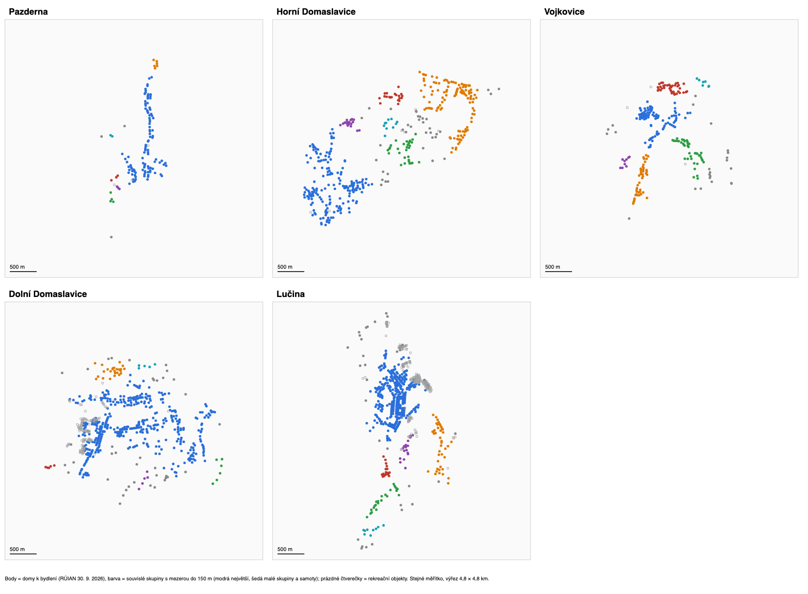

Roztříštěnost zástavby
Stránka ukazuje, jestli domy v obci tvoří jedno souvislé sídlo, nebo několik oddělených částí, a jak dlouhá síť (cesty, vodovod, kanalizace) by musela být, aby propojila všechny domy. Vychází z polohy budov v registru RÚIAN (výměnný formát za obce ke 30. 9. 2026, vdp.cuzk.gov.cz).
Za dům k bydlení se počítá stavební objekt evidovaný jako rodinný nebo bytový dům, případně stavba s číslem popisným a aspoň jedním bytem. Rekreační objekty (chaty s číslem evidenčním) jsou zvlášť.

Jak se roztříštěnost měřila
- Skupiny domů: domy, mezi kterými je mezera nejvýš 75, 100 nebo 150 m, tvoří jednu souvislou skupinu. Podle toho, kolik skupin vznikne a jak velký podíl domů je v té největší, je vidět, jestli je obec jedno sídlo, nebo několik oddělených částí.
- Vzdálenost od středu: jak daleko jsou domy od středu zástavby obce (medián souřadnic).
- Nejkratší propojení všech domů: nejkratší síť přímých spojnic, která propojí všechny domy (minimální kostra). Je to dolní odhad délky jakékoli sítě, která má vést ke každému domu, tedy cest, vodovodu nebo kanalizace. Skutečná síť vede po cestách a je delší.
- Obálka zástavby: plocha, kterou pokryjí kruhy o poloměru 50 m kolem všech domů.
Výsledky
| HD | PA | DD | LU | VOJ | |
|---|---|---|---|---|---|
| Domy k bydlení | 408 | 125 | 500 | 532 | 250 |
| Rekreační objekty | 6 | 3 | 116 | 178 | 3 |
| Podíl domů v největší skupině (mezera do 150 m) | 43 % | 83 % | 83 % | 74 % | 36 % |
| Počet skupin aspoň s 5 domy (do 150 m) | 9 | 2 | 6 | 7 | 7 |
| Velikost největších skupin (do 150 m) | 174, 119, 31, 20, 18, 10 | 104, 6 | 416, 25, 6 | 392, 42, 23, 17, 17 | 89, 43, 42, 37, 9, 7 |
| Podíl domů v největší skupině (do 100 m) | 16 % | 39 % | 40 % | 70 % | 18 % |
| Samoty a dvojice (mezera nad 150 m) | 10 | 4 | 18 | 16 | 7 |
| Medián vzdálenosti domu od středu | 1 219 m | 473 m | 795 m | 448 m | 742 m |
| 90 % domů do vzdálenosti | 1 768 m | 1 234 m | 1 333 m | 1 439 m | 1 226 m |
| Medián vzdálenosti k nejbližšímu sousedovi | 40 m | 37 m | 34 m | 26 m | 33 m |
| Nejkratší propojení všech domů | 25,1 km | 8,0 km | 29,4 km | 23,1 km | 14,3 km |
| …na jeden dům | 61 m | 64 m | 59 m | 43 m | 57 m |
| …z toho v úsecích delších než 150 m | 3,6 km (14 %) | 2,2 km (28 %) | 5,5 km (19 %) | 4,9 km (21 %) | 3,7 km (26 %) |
| Obálka zástavby (ha) | 192 | 56 | 212 | 159 | 100 |
| Domy na hektar obálky | 2,1 | 2,2 | 2,4 | 3,4 | 2,5 |
Co z toho plyne
- Pazderna je jedno sídlo podél cesty. 83 % domů tvoří jednu souvislou řadu, kde mezi sousedy není víc než 150 m. Mimo ni je jen pár domů. Při přísnějším měřítku (100 m) se řada rozpadá na několik úseků, protože domy podél cesty mají mezi sebou mezery. Typická silniční nebo lánová ves.
- HD nejsou jedno sídlo, ale několik oddělených částí. Ani při mezeře 150 m největší část nemá ani polovinu domů. Obec tvoří dvě velké části (174 a 119 domů) a čtyři menší osady po 10–31 domech, mezi nimi samoty. Polovina domů je dál než 1,2 km od středu zástavby, ve srovnání s 0,45–0,8 km v ostatních obcích.
- Vojkovice jsou rozdělené podobně jako HD. Největší část má jen 36 % domů a obec tvoří čtyři části po 37–89 domech. Jsou ale menší a kompaktnější: polovina domů je do 742 m od středu zástavby.
- Uvnitř jednotlivých částí ale HD rozptýlené nejsou. Na jeden dům připadá 61 m nejkratšího propojení, prakticky stejně jako v DD (59 m), Vojkovicích (57 m) a Pazderně (64 m). Dlouhé úseky mezi částmi tvoří jen 14 % délky propojení, nejméně z pěti obcí. Roztříštěnost HD je tedy v tom, že obec má několik vzdálených těžišť, ne v tom, že by domy stály každý zvlášť.
- Lučina je nejkompaktnější: 43 m propojení na dům, sousedé nejblíž (26 m) a největší hustota v obálce zástavby. Je to dané hustou zástavbou v jádru a bytovými domy.
- Dopad na infrastrukturu: délka sítě na dům, která rozhoduje o nákladech na kanalizaci nebo vodovod, je v HD srovnatelná s DD, Vojkovicemi a Pazdernou. HD znevýhodňuje spíš potřeba několika samostatných řešení (nebo dlouhých propojovacích stok) pro oddělené části. Odpovídá to tomu, že v obci je dnes podle RÚIAN 94 domů s vlastní domovní ČOV a 290 se žumpou.
Pozor
- Výsledky závisí na zvolené mezeře. Proto jsou uvedeny tři (75, 100, 150 m). HD jsou při mezeře 75 a 100 m nejroztříštěnější (největší skupina 13 % a 16 % domů); při 150 m mají menší největší skupinu jen Vojkovice (36 % proti 43 %). Lučina je nejkompaktnější při mezeře 75 a 100 m. Při 150 m ji předstihnou Pazderna a DD, kde se jednotlivé úseky podél cest propojí.
- Nejkratší propojení počítá přímé spojnice. Skutečné cesty a sítě kopírují terén a vlastnické hranice a jsou delší, u všech obcí podobně.
- Bod domu je definiční bod budovy z RÚIAN, ne vjezd z ulice.
- „Střed“ zástavby je statistický střed rozmístění domů, ne náves ani obecní úřad.
Metodika a zdroje
Zdroj: RÚIAN, výměnný formát za obce (soubory OB_<kód>_UKSH na vdp.cuzk.gov.cz), stav ke 30. 9. 2026, definiční body stavebních objektů. Skupiny domů jsou spočítané jako shluky bodů s maximální mezerou 75, 100 a 150 m. Nejkratší propojení je minimální kostra nad body domů s přímými (vzdušnými) spojnicemi. Obálka zástavby je sjednocení kruhů o poloměru 50 m kolem všech domů. Rekreační objekty do výpočtů nevstupují.